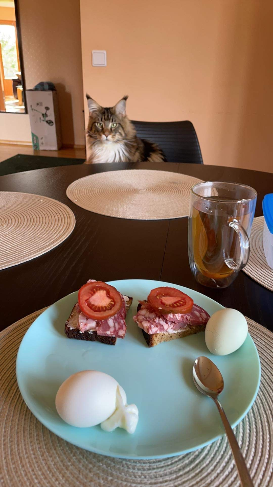
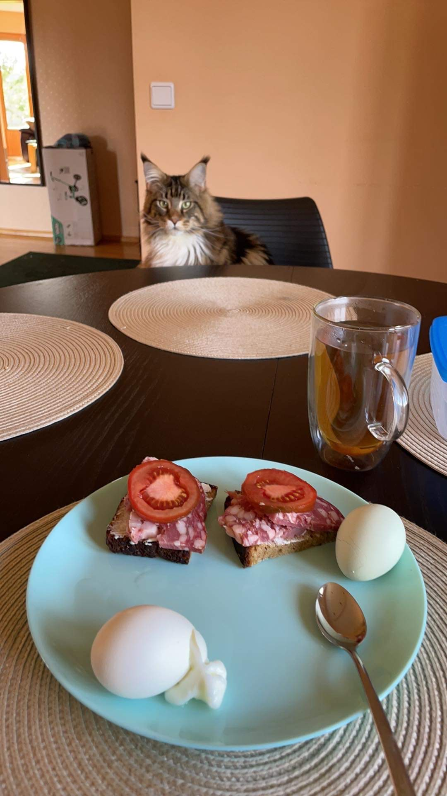

Apie mane
Sveiki, aš esu Andrius Braškys, man yra 29-eri metai. Pagal išsilavinimą esu architektas/dizaineris, wannabe programuotojas ar programinės įrangos architektas. Turiu vilčių, kad ateityje apjungęs visas turimas žinias ir naujai išmoktas IT žinias sugebėsiu sukurti kažką funkcionaliai unikalaus ir palengvinti darbus sau, architektams ir kt.
Esu susituokęs ir šeimoje turime vienerių metų sūnų vardu Aistis. Labai džiaugiamės savo šeimyniniu gyvenimu.
 P.S. Turime du augintinius Niufaundlendo veislės šunę vardu Kola ir Meino meškėną vardų Rafas
P.S. Turime du augintinius Niufaundlendo veislės šunę vardu Kola ir Meino meškėną vardų Rafas
 

Užsiėmimai
- Esu užsiemęs įvairia sportine ir nesportine veikla:
- Aikido treniruotės : 4 metai
- Futbolo treniruotės : 1 metai
- Kyokushin Karate: 2 metai
- Krepšinio treniruotės Sabonio krepšinio mokykloje : 4 metai
- Piešimo/kūrybos kursai : 2 metai
Hobiai
- Keliauti su nameliu ant ratų
- Žaisti krepšinį
- važinėti dviračiu
- ir daug kt.